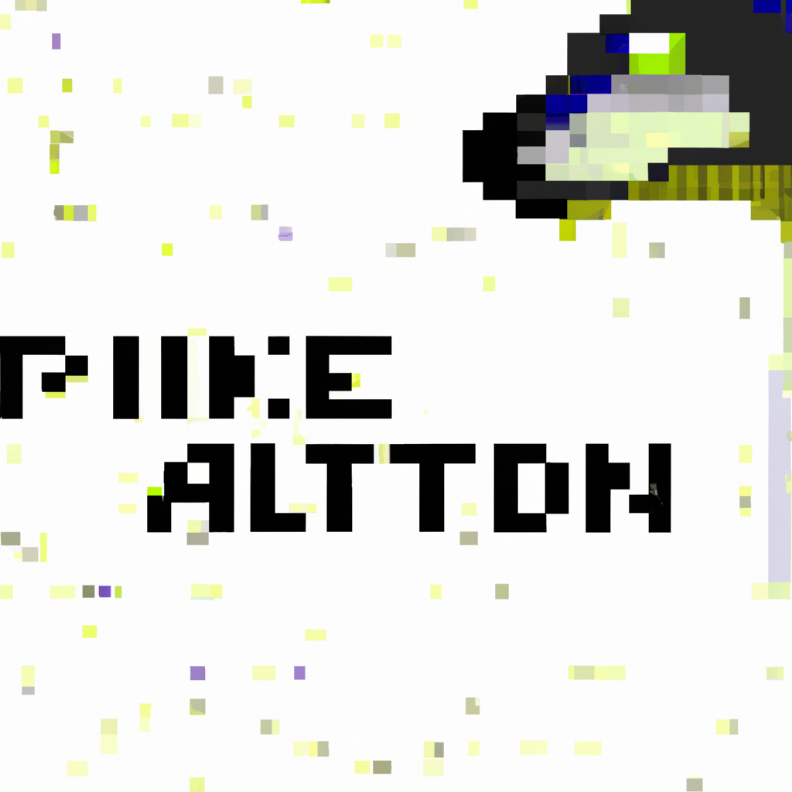

The future of Python and AI
Artificial intelligence (AI) and machine learning are rapidly changing the way that programming is done today. Python is at the forefront of the revolution, with many of the most popular AI and machine learning libraries written in the language.
With the advances in technology, the potential of AI combined with Python is only beginning to be explored. There are countless possibilities for how AI and machine learning could be used to improve existing applications, create new ones, and even automate tasks that would normally require human input.
One of the most exciting aspects of AI and Python is the potential to automate mundane tasks, such as customer service. By using AI and machine learning, customer service agents could be replaced by intelligent chatbots that are able to handle basic customer queries and direct them to the appropriate personnel.
In addition, AI and Python could be used to create smarter search engines, allowing users to find exactly what they¡¯re looking for quickly and easily. AI and machine learning could also be used to create personalized content recommendations, based on user preferences.
The possibilities for AI and Python are endless, and the technology is only going to become more powerful as the years go on. It¡¯s an exciting time for programmers, and it¡¯s only going to get better from here.